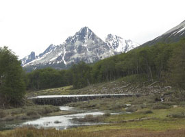
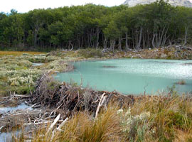
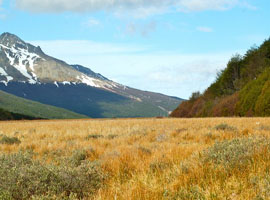

Turbera del valle Carbajal-Tierra Mayor, una de las más extensas de Sudamérica
Al transitar sobre esta turbera se aprecia su textura suave, esponjosa y generalmente saturada en agua, que revela un ambiente frágil convirtiendo esta caminata en una experiencia singular. El sendero esta acompañado por varias castoreras, reconocibles como embalses cuyos diques fueron construidos por castores, formados por ramas fuertemente entrelazadas. Se señala un punto de aproximación para fotografía.
  